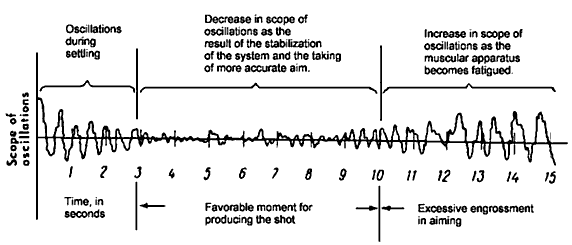
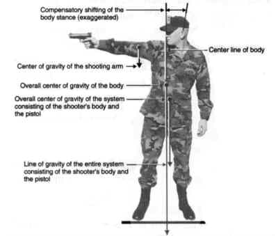
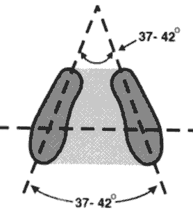
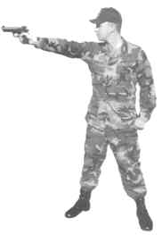
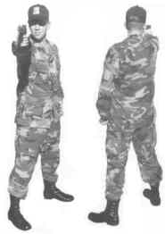
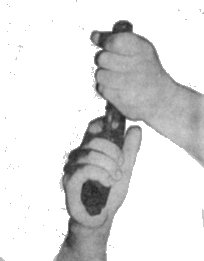
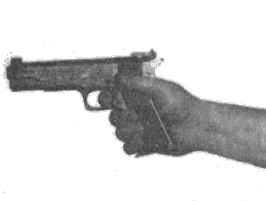
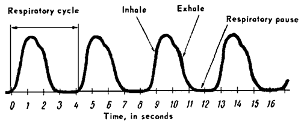
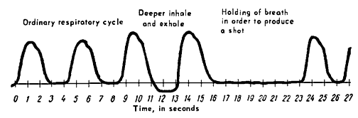

It is necessary during firing to press the trigger under varying conditions of pistol movement in conjunction with correct sight alignment. In order to apply coordinated pressure on the trigger, the shooter must wait for those very definite times when all control factors are optimum and firing conditions become favorable. The rule that must be observed as the first step in attaining control of your shooting is: "You must never attempt to fire until you have completely settled into a minimum arc of movement."
In order to learn how to fire a shot at the proper time, the shooter must make analysis of
the time needed to settle and the duration of the minimum arc of movement.
The entire system, consisting of the shooter's body and the pistol, always undergoes a
degree of movement. This is sometimes a pulsating, swaying or erratic arc of movement during
aiming and firing a shot. The cause of this movement aside from conditions such as weather, is
the action of the muscles maintaining the shooter's body in a definite position. Other action such as blood pulsation, causes movement of individual parts of the shooter's body and the pistol. The nature and extent of the arc of movement changes within the time being devoted to delivering a shot. For example, when the shooter is first getting his sight alignment and has not yet had time to settle his body and pistol, the extent of the movement is relatively great. As the body becomes balanced and the aiming is more precise, the arc of movement minimizes. After a certain length of time, the minimum arc of movement begins to increase, because the muscles begin to fatigue, and the shooter does not have enough air in his lungs to continue holding his breath. If we record the arc of movement, we will see a wavelike line with varying amplitude of oscillation (Figure 1-1).

Figure 1-1. Basic Scheme of Minimum Arc of Movement.
It is obvious that under such circumstances the shooter must begin his smooth pressure
on the trigger while not devoting too much attention to the arc of movement as long as it remains at the minimum. Continue to apply pressure on the trigger and intensely concentrate on keeping the sights in alignment. The resulting five to seven second period is the most favorable time for firing an accurate shot.
Taking into consideration the direct relationship between accuracy of shooting and the
degree of immobility of the pistol when the shot is being delivered, the marksman must give
greatest consideration to the selection of a stance, a position, a grip, and a means of breath
control which will guarantee the greatest stability to both the pistol and the body. The relatively small degree of movement thus obtained provides a stable foundation, permitting use of the other fundamentals.
A. THE STANCE.
The excellence of the stance is a major factor in creating conditions for maximum control.
A high degree of control is necessary for the delivery of an accurate shot. Every individual
possesses a combination of individual characteristics that are peculiar to him alone. Among these are height, weight, proportion of body, development of muscle system, etc. It follows, then, that there cannot be any definite, all-purpose stance which applies equally to all shooters. Therefore, the shooter himself, on the basis of his own particular configurations, must find the variation of stance which provides the greatest degree of stability for his body.
1. The Main Requirements of the Stance: The assumed stance is the position
of the human body to support a pistol aimed at a target. Despite the great number of physical
differences encountered in any cross-section of shooters, the stance must provide for:
a. The greatest possible degree of equilibrium and stability in the body-weapon
system with the least possible strain on the shooter's muscles.
b. A head position which will allow for the most efficient use of the shooter's eyes
throughout the sighting and aiming process.
Throughout the process of training it is necessary, therefore, for the shooter to exercise
special care in the selection of a stance. The development of a poor stance should be detected
and corrected early in the training program. Otherwise, it may require the breaking of deeply
ingrained habits later.
Considering the role played by the muscles, bones and ligaments in the creation of stability in the shooter's stance, it is necessary for the shooter to understand the makeup of the human body. See Section Five, Annex I for supplemental information entitled, "Characteristics of the Human Body Relevant to Stance, Position and Grip ".
2. Assuming the stance:
a. When assuming the firing stance, the head must be held as level as possible,
so that the shooter can see the target directly in line with the arm and sights. It is necessary to take all steps to eliminate the tilting of the head to the right or left or an excessive tilting forward. It is not necessary to look sideways or to look at the sights from beneath the eyebrows. The head should not be pushed forward closer to the rear sight; neither should the head be tilted back excessively. This causes undue tension upon the neck muscles and, as a consequence, a slight movement of the head develops from fatigue. This may hinder the maintenance of perfect sight alignment.
b. When assuming a firing stance, the shooter must support the extended arm
holding a weapon. As a result, the muscular system undergoes considerable strain. It must not
only maintain the shooter's body in a definite position but must also exert a counteraction to the rather large weight of the suspended gun.
c. A shooter supporting a weapon constitutes a single system with a common
center of gravity (Figure 1-2). Since the entire system is in equilibrium only when its line of gravity runs through the support area, (Figure 1-3), the holding of the weapon causes a change in the relative position of the individual parts of the body. A compensating displacement is brought about by the necessity to create a counteraction to the weight of the pistol and supporting arm. This compensating displacement of the parts of the body changes the shooter's posture. As a result, when he assumes a firing stance, his body takes on an asymmetric position which is unnatural. The preservation of the body's equilibrium in this unnatural posture requires that a greater load be placed upon the muscles and ligaments reinforcing the movable portions of the body.
d. The shooter has the task of finding for himself a suitable stance which will
achieve immobility of the body without an excessive strain on muscles.
Let us assume that the shooter takes a stance for firing that will preserve the natural, erect posture of the body. He will strive to keep it erect with small compensating deviations of the muscle system. Thus, the extended arm holding a pistol places great tension on the muscles in the back and shoulders. In addition, if the shooter's figure is examined from the side, it will become obvious that when the shooter's body is kept stiffly erect, the body will be slightly unstable. The keeping of the body rigid will result in early fatigue and cause undesirable movement.
e. What posture should be given to the body in order to best support the weapon
with the least expenditure of muscular effort?

Figure 1-2. Situation of the Over-all Center of Gravity of the Entire System
The shooter must hold his body in something less than an erect posture, with a slight
rearward bend in the back and the pelvis brought slightly forward. In this posture, the body has the vertical line of the center of gravity shifted back of the axis of the hip joints. In such a pose, the body is kept stable in the hip joints not so much by the work of the muscles, but by strong ligaments. The relaxed immobility of the body is attained by counterbalancing the weight of the upper body against the extended firing arm and pistol, and transfer much of the weight to the spinal column.
f. The selection of the most stable stance will include giving the body a certain
degree of bend. As shown by practice, the shooter has nothing to fear in giving his body an
asymmetric pose.
g. The stability of the firing arm and weapon depends to an extent upon the correct
placement of the feet. This determines the support area for the shooter's body. The most stable and most comfortable stance will be when the feet create a support area in the shape of a trapezoid with the feet placed apart, approximately shoulder width. The toes should be spread apart slightly (Figure 1-3). This placement of the feet creates not only a comparatively large support area, but is also the most favorable positioning of the feet for avoiding muscular strain in the legs.

Figure 1-3. Placement of the Body's Support Surfaces - Both Feet - in Relation
to One Another, Creating the Support Area for Firing.
h. When assuming the firing stance, the shooter should not attempt to bring the
legs too close to one another. Narrow placement of the legs decreases the support area and will result in a lose of stability, causing movement of the firing arm along the horizontal. Do not place the legs too far apart, as this creates undesirable strain on the inner arches of the feet, straining the leg muscles and holding the hip joints rigid, which leads to fatigue and an increase in the arc of movement.
I. In order for the stance to be a stable one, the shooter must, first, distribute the
weight of his body, the arm and pistol evenly on both legs; second, the load placed on each leg
must pass through the middle of the foot or close to the balls of the feet. When the weight of the body is distributed in this way the body's line of gravity will run through the middle of the support area. The stance will be the most stable when the muscles of both legs carry the same load. The coordinated work of these leg muscles results in the body's weight being alternately shifted in slight corrective moves in order to maintain balance.
j. The degree of strain upon the muscles and ligaments of the knee joints is of
importance in the stability of the stance. The insufficiently rigid position of the knee joints will lead to an increase in the body's movement as a whole. By holding one leg straight and keeping the other one partially bent, varying tensions will exert excessive tension on the leg muscles. Inflexible straightening of the legs also causes tension of the leg muscles which leads to a loss of stability.
k. The group of muscles which do not directly participate in maintaining the
shooter's body in the vertical position or holding the pistol aimed at the target is the muscles of the left arm and hand, the left-hand portion of the chest, the neck muscles, the abdomen, and the buttocks, must be relaxed as much as possible.
It is necessary to properly position the left or free arm and hand (for right-handed shooter). The free hand should be inserted into the left aide pocket in a relaxed manner, or you may hook the left thumb over the waist belt. In relaxation of the left arm and shoulder, the free arm must not be allowed to hang loose, as any wind or recoiling of the body during firing will cause the free arm to swing, transferring to the body any movement.
l. The pistol arm should be extended with the wrist stiff and the elbow locked
without strain. The arm must be straight, firmly extended and with no unnecessary tension of the muscles. This establishes solid arm control.
m. The body weight center of gravity should be brought forward slightly from the
center of the support area, with a very slight shift toward the tips of the foot to reduce the action of the balance correcting mechanism. This is apparent in the alternate tensing and relaxing of the muscles of the legs, abdomen and lower back. This action to regain equilibrium is continuous. The body cannot remain motionless because the equilibrium does not remain constant. The constant corrective process causes an almost imperceptible weaving or sway.
3. The stance factor is so essential that a step-by-step summary of all of the points important to a proper stance is in order.
a. Stance must provide for:
(1) The greatest possible degree of equilibrium and stability of the shooter's
body and weapon with the least possible strain on the shooter's muscular system, and the smallest movement possible of any part of the body, the shooting arm and the pistol.
(2) A head position which will allow for the most favorable conditions for the
operation of the eyes during aiming.
b. During training, the shooter must take special care that he is not developing an
incorrect stance or body posture which will require a breaking of habits later.
c. The shooter should become familiar with assuming the proper stance and
practice getting the same stance each time it is assumed. The requirements are:
(1) The feet are separated about the width of the shoulders or slightly less,
toes pointed out slightly.
(2) Stand up erect and relaxed.
(3) The legs should be straight, but not stiff, knees firmly straight but not
rigidly locked.
(4) The hips should be level and in a natural position.
(5) The abdomen should be relaxed.

.

Figure 1-4. Three Views of an Effective Stance.
(6) The shoulders and head should be level. No humping over or
slouching with an unnatural tilt to the head.
(7) The non-shooting arm should be relaxed, the free hand in the side
pocket or thumb hooked over the belt, not hanging loose.
(8) The pistol arm should be extended with the wrist stiff and the elbow
locked without strain.
(9) The body weight center of gravity should be brought forward slightly
from the center of the support area, with a very slight shift toward the tips
of the feet to reduce the action of the balance correcting mechanism.
B. POSITION.
When preparing for accurate shooting, it is insufficient merely to assume a comfortable
and stable stance. You must be able to aim or point at your target in a natural, consistent
manner. Improper position will affect your ability to establish or maintain the hold in the center of the aiming area. Before each shot or string of shots, it is necessary to check the
correctness of the assumed position with respect to the target. Avoid unnecessary muscular
tension in the effort to hold in the aiming area. An adverse effect upon the movement of the
shooting arm and weapon is caused by extra muscular effort.
Match competition requires the shooter to fire a large number of shots in one day. It is
necessary to find the most effective position, which will allow the shooter's body to assume an
identical position over a long period of time without causing undue strain upon the muscular
system. Any feeling of discomfort, fatigue, constraint or a continuing necessity to correct the orientation of the body to the target distracts the shooter's attention from the principal goal; the uniform, absolute control of an accurate shot. The finding of the most effective position when firing will provide for a consistent pointing of the shooting arm and weapon and provide a free and unforced feeling of natural alignment with the target during the entire period of shooting.
1. The shooter must position himself so as to naturally align or point himself and his
weapon with the target so the hold will remain in the desired area without a tendency of the
shooting arm to drift away from the aiming area.
2. To orient or align yourself properly with the target, use the following method:
a. First face approximately 40 to 50 degrees from the target using the methods
of assuming the stance previously mentioned.
b. Look at the target by turning only the head. Keep the head level and turn it
far enough toward the target to allow the eyes to look straight out of the head.
c. Raise the arm to align with the target. Close your eyes, raise your pistol arm a foot or two above the horizontal and then allow it to settle back relaxed and naturally to the horizontal. Completely relax the arm and shoulder not being used. Repeat this procedure once or twice and settle into a natural point. A true, natural point is not obtained with the eyes open.
d. After settling into a natural point, open your eyes to check if your arm and pistol are aligned with the target. If the pistol has settled in the center of the target, you have your natural position.
e. If the arm settles to one side of the target center, move your rear foot in the
direction of error. Maintain without change the stance of the body as a unit from the feet to the shoulders and head. Swing the whole body by shifting the position of the feet until the arm and pistol are naturally aligned on the center of the target. Tests such as this will readily indicate your natural position. In no instance must the shooter correct errors in hold by moving the arm independent of the body. This type of correction is purely artificial and the arm will revert to the original error after recovery from the recoil of a shot.
f. Recheck after each error is found until no error exists.
3. The shooter must always remember that the improvement of his marksmanship skill
requires an unceasing search for an even better stance and position. The position and stance
assumed must not be considered as something constant. As marksmanship skill develops,
changes in the stance and position are necessary in order to improve performance.
4. Many expert marksmen, as a result of long and persistent training have completely
developed their stance and position to the point of automation, sometimes not even noting its
individual shortcomings. It sometimes happens that some experts, even though they know about
their shortcomings, do not attach the proper importance to them. Only when the individual
shortcomings in position or stance become a serious hindrance to their progress do they begin
to change. The overwhelming majority of the leading shooters actually work seriously and
creatively to improve themselves by evaluation of their position and stance.
5. Young shooters must not blindly copy, and instructors and coaches must not
mechanically, without any analysis, instill in their pupils a particular variation of position or stance. It is necessary to make an intelligent approach to the problem of selecting the particular stance and position that is acceptable to oneself, taking from the experts desirable aspects and rejecting undesirable ones.

Figure 1-5. Getting the Grip.

Figure 1-6. The Grip.
C. GRIP.
The proper grip is one which provides the shooter with the maximum control of the
weapon. To maintain a natural sight alignment, he must hold the weapon firmly and be able to
apply positive, straight to the rear pressure on the trigger that will not disturb sight alignment.
1. Uniformity: For maximum control, all of the requirements for a proper grip must be
uniformly applied at all times.
2. Requirements: The proper grip on a pistol is one that meets the following requirements:
a. The grip should be such that the front and rear sights will stay in natural
alignment without any extra effort to maintain the relationship. Without this feature, there will be a tendency for the front sight to move over to one side of the rear sight notch, or be moved above or below the horizontal surface of the rear sight. Sight alignment, quickly regained after recoil without the need for correction, speeds up recovery and improves timed and rapid fire control. Maintaining sight alignment should be an effortless action before the next shot. Positive trigger pressure can be applied if the sight alignment is being maintained without effort. Sight alignment is easier to maintain if no adjustments are necessary such as moving the wrist or head.
b. Grip the pistol firmly enough while firing a shot so that shifting or slipping of the grip will not cause loss of control of the pistol. Recovery from recoil for the next shot in sustained fire is seriously hampered by the loss of sight alignment. The trigger pressure under these conditions is usually reluctant and timid. Unless the proper grip can be renewed quickly, (next to impossible in the middle of a timed or rapid fire string) maintaining sight alignment during the application of positive trigger pressure is a difficult operation. The tighter the grip, short of setting up a tremble, the better the control. The degree of pressure that should be exerted in gripping the pistol is determined by the condition of the muscles that do the gripping. Frequent practice, experience and certain exercises promote a strong grip and have a bearing on when a tremble will begin.
c. There must be no change in the tightness of the grip because a variation of
gripping pressure will adversely effect sight alignment. Any degree of tightening or loosening of the grip from an established grasp will cause the sights to move out of alignment. The pressure of the grip must remain constant. It cannot be increased or decreased as trigger pressure is being applied because sight alignment will be altered.
d. The trigger finger should apply positive pressure on the trigger as an
independent action, completely free of the other muscles of the shooting hand. The trigger finger should not touch the stock or the frame of the pistol because of the added friction and drag on applying trigger pressure. Dry fire a few shots watching the front sight carefully. If the front sight moves at the instant the hammer falls, reposition the trigger finger to the left or right, up or down, on the face of the trigger. Repeat the dry firing and adjusting the position of trigger finger until the release of the hammer causes no movement of the front sight in the rear sight notch.
e. There can be no variation in the grip from one shot to the next, from one series of shots to the next, from one day's shooting to the next, ad infinitum. In the final analysis, there is only one correct grip for each shooter. Each type of pistol, caliber . 22, caliber . 38, caliber .45 has its peculiarities and the shooter must adapt to each. The proper grip can be discovered through trial and error, practice and analysis. It must become, by extensive use, a familiar operation that eventually can be assumed without much difficulty. When the experienced shooter checks his grip out before shooting, it seldom needs adjustment. One of the frequent variations of grip that plagues new shooters is the grasping of the pistol grip with the hand slightly displaced to the right or left from the normal. As a result the placement of the trigger finger on the trigger will be different, thereby jeopardizing the requirement that the trigger be pressed straight to the rear.
f. The grip must be as comfortable as possible. The muscles of the hand and lower
arm, after sufficient time has passed for the hand to become accustomed to the added stress,
should experience little discomfort from the way the pistol is placed in the hand. If the grip is awkward and possible cramping and the hand muscles continue to tire easily, look for another
solution or use an exercise device to strengthen the hand. To avoid the formation of painful,
blisters, calluses and cracked tissue, reduce the tendency of the skin to stretch. Tautly stretched skin may also pull or exert force on the pistol frame in such a way as to cause eight alignment deviation. An equalization of the stretching of the skin and muscles of the gripping hand is paramount. Straight-in contact should exist between the skin of the fingers and palm and the surfaces of the frame and grips when the gripping pressures are brought to bear; not a sideward, sliding or grazing pressure.
g. The force of recoil must be controlled by being transmitted straight to the rear into the shooting arm. Recoil against the base of the thumb, which causes the weapon to twist in the hand, will allow a shift or grip and/or a bending of the wrist. Either event jeopardizes quick recovery from recoil in timed and rapid fire. The pistol should be held by being gripped normally, not by a choking grasp that endeavors to press on the stock in an all enveloping grab. The best points of pressure to hold the sight in alignment are the semi-flat grips on each side of the frame. However, the gripping hand cannot exert equal pressure on each of these surfaces simultaneously and such pressure would not overcome the effect of recoil. Therefore, the obvious pressure points of the shooting hand that will channel the effect of recoil straight to the rear and allow relative ease in maintaining sight alignment are: the middle bones of the three lower fingers, the base of the thumb high on the stock, the depression on the center of the heel of the hand, and last, the base joints of the four fingers along the upper palm. The primary pressure points on the .45 caliber pistol are the front surface of the grip and the mainspring housing-grip safety surfaces. The secondary points are: high on the left side of the stock near the slide lock and the forward curve of the right grip, each of which have to have gripping pressure applied equally to prevent loosening of the over all grip, and to maintain sight alignment.
h. Holding the grip too long without an occasional relaxation will result in early
fatigue. Fatigue destroys control. Excessive force of gripping for control of the pistol assures that fatigue will exist if the gripping power of the hand is weak. Undue fatigue in the muscles of the hand and forearm will also cause erratic application of trigger pressure. The tremble level is lowered to a point where the shooter cannot hold the pistol still, even for a few seconds, while trigger pressure is being applied.
3. Method of getting the proper grip: The proper grip must conform to all of the foregoing requirements plus it must be a hard grip and it must be adapted to the hand of the individual shooter.
NOTE: FOR THIS INSTRUCTION IN OBTAINING THE PROPER GRIP, THE WEAPON IS THE .45 CALIBER SERVICE PISTOL. THE FOLLOWING STEP-BY-STEP SEQUENCE WILL PROVIDE THE PROPER GRIP:
a. With the non-shooting hand, pick up the pistol by the barrel and of the slide, being careful not to mar the blackened sight and keep the muzzle pointed down range.
b. Spread the index finger and thumb of the shooting hand apart to form a "V", with the thumb held slightly lower than the index finger.
c. Bend the wrist slightly downward to obtain proper angle of contact.
d. Fit the pistol into the "V" of the thumb and index fingers by seating the grip safety straight and firmly into the loose "web" of akin in the "V".
e. Press downward on the barrel to pivot and push the mainspring housing firmly against the inside of the bulge of flesh at the base of the thumb and into the depression in the approximate center of the heel of the palm.
f. Stretch the fingers forward, letting the trigger finger come to rest flat against the pistol frame just above the trigger guard. Safety dictates the trigger not be contacted at this time.
g. The lower three fingers should come to rest closely touching each other, with the center bone of each finger resting on the curved front surface or "front strap" of the receiver. Little or no pressure should be exerted on the finger tips extending around the front strap to the surface of the left handgrip. Pressure exerted on the front strap by the little finger should be lighter than that brought to bear by the middle and ring fingers. Too much pressure with the little finger may cause the muzzle to depress slightly, resulting in the front sight aligning low in the rear sight notch.
h. The thumb should be raised to a level higher than the index or trigger finger. Only the joint at the middle of the thumb is high against the stock in the vicinity of the slide safety. The end of the thumb is turned up and away from the stock as it has no function. Pressure exerted on the aide of the pistol by the end of the thumb has a tendency to disturb sight alignment. The thumb should not exert great pressure on the aide of the pistol as early fatigue will result. Only required substantial supporting force should be exerted to hold the weapon firmly in place in the shooting hand.
i. A controlling grip can be affected by the three lower fingers directing primary pressure on the front strap straight to the rear, pressing the mainspring housing and grip safety firmly against the side of the center depression and the heel of the palm at the base of the thumb, and the loose flesh in the "V" of the thumb and index finger, respectively. This can be compared to a vise with the inner surfaces of the palm as the stationary jaw of the vise and the three lower fingers pressing on the front strap of the pistol as the moving jaw.
j. The non-shooting hand should be used to adjust the "fit" of the pistol into the shooting hand. A slight rotation of the weapon in the gripping hand as it is alternately gripping and releasing will allow the equalizing of a forceful grasp. The gripping hand must reach around to the right far enough to allow the trigger finger to reach into the trigger guard and also to position itself on the trigger at the exact point at which the trigger pressure can be applied straight to the rear. According to the size of the hand, the trigger finger will apply pressure with the tip, ball of the first section or the crook of the first joint or elsewhere. The primary concern is not what portion or spot along the trigger finger is the standard point of contact, but at what spot on the finger you can bisect the trigger, press straight to the rear without disturbing sight alignment.
k. When the "fit" is correct, remove the trigger finger from the trigger, free the pistol from the non-shooting hand and tighten the grip with great force until a tremor is noticed. Release a small percentage of this gripping pressure immediately, enough so that the tremor disappears and leaves the shooter with a hard, solid grasp that will result in absolute control. The tighter the grip, the better the control. The shooter is now exerting correct pressure for maximum recoil control.
4. Checking For Proper Grip: The proper grip is a natural grip that will meet all the requirements in paragraph 2, above. To assure a proper grip, it should be checked against the requirements. A deciding factor in knowing whether your grip is proper is one of familiarity. By use of the proper grip innumerable times, a flaw is immediately sensed.
a. To assure the sights will stay in alignment, the following test is made: extend the shooting arm and observe the sight alignment. If the front and rear sights are out of alignment, grasp the barrel with the non-shooting hand, loosen the grip sufficiently to slide the pistol in the hand, rotating it slightly away from the direction of error in sight alignment. Re-grasp the pistol firmly and extend the arm. Check the alignment without an effort being made to align them by wrist or head movement. If the alignment is natural, you may check for maintenance of sight alignment. With the arm extended, close the eyes, raise and lower the arm and settle. Open the eyes and observe. If the alignment has deviated, reposition the pistol in the shooting hand and repeat the closed eye test until natural alignment of the front and rear sights is achieved and maintained. During shooting, a constant check should be conducted of the tendency of the sights to continue to align themselves. The grip obtained at the beginning of shooting will not necessarily remain correct because the jolting recoil and build-up of fatigue will require correction to the grip to maintain sight alignment.
b. To check for a grip firm enough to prevent shifting after making sure the pistol is unloaded, have the coach bump the pistol rather forcefully, up or to the aide with the heel of his hand. Also, have the coach grasp the pistol by the barrel and make an effort to tear it from your grasp.
c. To check for variations in tightness or correctness of grip, it is best to dry fire a few shots before live shooting starts and watch for slight variations in sight alignment.
d. Checking for independent trigger action should be accomplished before
shooting by a visual check of the trigger finger clearance from the grip. Check by dry firing to detect any drag or undue friction noticed in the trigger. Also, check for a sympathetic tightening of the muscles of the hand as trigger pressure is applied. This can cause as much disturbance of sight alignment as the failure to press the trigger straight to the rear.
e. The rapid onset of fatigue and soreness of the shooting hand is usually the result of an incorrect grip.
f. Checking for straight to the rear recoil directly into the shooting arm and shoulder can best be done in practice with an unloaded pistol by having a coach or team mate stand in front of you and forcefully and abruptly push against the muzzle of your tightly gripped pistol driving it straight back toward your shoulder in simulation of recoil action.
5. Aids to Developing a Good Grip: The great pistol shooters have: strong hands and a hard grip; a method of gripping without change unless analysis dictates a change that will improve it; a different grip mastered for each shape of stock or different type of pistol; molded, shaped or custom grips, that fit perfectly; and if they use powdered rosin or a like substance, they use it every time the hand becomes moist before they grip the pistol.
a. The "top guns" have a grip like a vise. Exercise devices such as rubber balls, spring grip builders, etc. will develop a strong grip. Exercise devices require constant use. Another approach, to reduce reliance on artificial exercisers, is to engage in work or a sport that places demands on your manual strength and dexterity, for example, chopping wood, digging in the garden, using hand clippers on the hedge; playing tennis, baseball, ping-pong, etc. Use of the hands in meticulous work also develops an exacting touch and coordination that is valuable to the pistol shooter.
b. Never thoughtlessly change your grip. A correct grip is a precious commodity. It evolves from much hard work, thinking, and planning, plus painstaking analysis. Each satisfactory grip found among the better shooters comes from trial and error. The good grip that is the end product of much effort should not be changed except when sharply critical analysis dictates a change that will improve it. The shooter who is desperately changing his grip hoping that he will chance upon the right solution will generally lower his scores. In the event that a better score is fired under these conditions it comes on an occasional basis with no tangible reason for the improvement. Analysis and trial, in a never ending quest to improve your marksmanship, is the answer.
c. A modification of the shooter's proper grip is necessary on different types of pistols. The firmness of the grip remains the same for all calibers and types of pistols and revolvers, but nature of the grasp must correspond to the shape and size of the grips in meeting all the requirements of the proper grip. For example, the caliber .22 grip is sometimes found to be smaller in circumference than a caliber .45 pistol. In this instance, the reach of the lower three fingers may extend further around the stock, resulting in one of the primary pressure points (the middle bones of each of the three lower fingers) coming to rest beyond and partially around to the left side of the front strap. Pressure exerted would not be straight to the rear. As it is fully applied in the normal grip, it would no doubt effect the natural alignment of the sights. Also, shooters with small hands have trouble with stocks of varying sizes. One example is having to compromise, due to a short trigger finger which can reach the trigger only with the finger tip, between a straight to the rear trigger pressure and the best position of the pistol in the shooting hand that tends to give
natural sight alignment.
d. Shaped, molded or tailored custom grips are required to fit perfectly. Fitted grips are primarily used to help the shooter who can't consistently duplicate the proper grip when using standard factory grips. The individual shooter must first decide what features and characteristics of a shaped grip suit his hand. Stocks can be made to fit exactly, but it is a difficult job. Only an experienced shooter is capable of knowing what he actually needs in a custom grip, because only he knows what his proper grip looks and feels like.
e. Powdered rosin dusted on the hand can help to maintain a solid, controlling grip but it is not absolutely necessary. Normally, a strong hand and the checkering and stippling on the stocks and metal surfaces is sufficient. In hot weather when the hand may perspire or a hand that becomes wet in the rain may cause slippage, powdered rosin or a like substance, that will temporarily dry the skin of the palm and fingers, is then justified.
In the final analysis, there is only one correct grip for you. It is one that is firm; affords the individual shooter the maximum degree of control over maintaining sight alignment and allows positive, straight to the rear pressure on the trigger without disturbing sight alignment.
D. BREATH CONTROL.
The correct method of breathing is an essential part of the shooter's system of control.
Most pistol shooters know less about the proper method of breath control than of any of the other fundamentals.
The object of proper breath control is to enable the pistol shooter to hold his breath with a comfortable feeling long enough to fire one shot slow fire; five shots in twenty seconds timed fire; or five shots in ten seconds rapid fire without loss of the ability to hold still or concentrate on sight alignment.
1. To be Effective, Breath Control Must Be Employed Systematically and Uniformly: The ability to concentrate and maintain rhythm is aided.
a. Promote a steady hold: It is generally known that one must not breathe during aiming. Breathing is accompanied by the rhythmical movement of the chest, abdomen, and the shoulders. This causes the pistol to move about excessively, making it almost impossible to produce an accurate shot. Therefore, one must not simultaneously breathe and try to fire a shot, but must endeavor to hold the breath for a short period of time.
b. The physiological processes involved in breathing: The shooter however, must not view the breathing process solely from the movement of the chest and the gun. He must not forget that the process of breathing, which consists of a combination of processes which occur constantly in the human body, determine in general the condition of the human being. Therefore, proper breathing is of great importance during shooting exercises which last several hours. Incorrect breathing technique has an adverse effect upon shooting, especially if the concentration is disturbed by sensing of the need to breathe.
(1) During the process of breathing, there is an alternating increase and decrease in the volume of the chest, as a result the person inhales and exhales. A person inhales when the dimensions of the chest increase. Once inside the lungs, the air provides oxygen to the blood and in turn it absorbs carbon dioxide and aqueous vapors. Exhalation occurs when all the muscles relax, the diaphragm presses upward, and, under the action of the weight of the chest and the elasticity of the lungs, air is forced out of the body. Exhaling does not require muscular effort; it occurs as the result of the resiliency of the ribs and the muscular tissues and the elasticity of the lungs.
(2) When breathing calmly a person produces an average of 12 - 13
respiratory cycles a minute. Consequently, one respiratory cycle lasts 4 - 5 seconds. If one
traces the respiratory cycle, it is not difficult to note that the strained position of inhalation is replaced very quickly by exhalation. The very next inhalation begins after a respiratory pause of 2 to 3 seconds, (figure 1-7) during which time the carbon dioxide accumulates in the lungs. The duration off the respiratory pause is determined by the ratio of oxygen and carbon dioxide in the air remaining in the lungs.

Figure 1-7. Scheme of a Person's Breathing.
(3) The respiratory pause and the problems of the ventilation of the lungs are
of great importance to the shooter. It is obvious that during aiming and applying pressure on the trigger, the breath must be held only after the shooter has exhaled, timing it so that the breath is held at the moment of the natural respiratory pause. During that time the muscles are not strained and are in a relaxed state.
c. A person can prolong by several seconds this respiratory pause, that is, hold his
breath comfortably for 15 - 20 seconds, without any special labor and without experiencing
unpleasant sensations. This time is more than adequate to produce a shot or shots. Experienced shooters usually take a deep breath before firing and then, exhaling slowly, hold their breath gradually, relax and concentrate their entire attention upon sight alignment and the smooth application of pressure on the trigger (Figure 1-8).

Figure 1-8. Scheme of the Manner in Which A Person Holds
His Breath in Order to Produce a Shot.
2. Recommended method
a. Prior to fire commands:
(1) When expelling the air from the lungs before aiming, no effort whatever must be exerted. The exhaling must be natural and free, as in ordinary breathing. The air must not be held in the lungs; incomplete exhaling before aiming leads to straining and to stimulation of the nerve centers regulating the breathing, and the shooters concentration on aiming is distracted.
(2) In order to make sure that during prolonged firing the interruption of the rhythm of breathing does not have an influence upon the shooter, the breath must not be held for an excessive period when trying to fire a slow fire shot. If the shooter does not produce a shot in 8 - 10 seconds, he must stop aiming and take another breath.
(3) Before holding his breath for the next shot he must empty his lungs well, taking several deep breaths. The same should be done between shots and strings of shots
throughout the firing. This facilitates the lengthening of the respiratory pause before aiming and provides for regular rest between shots and strings. The oxygen level in the blood is slightly increased. As a result the shooter is relaxed and comfortable during all shooting without excessive and premature fatigue.
b. During the fire commands: Take a deeper than normal breath at the command, "READY ON THE RIGHT", take another at "READY ON THE LEFT", extend your pistol and take
the final breath and exhale to the point of comfort at "READY ON THE FIRING LINE".
As the shooter gains experience in proper breath control, he will find that he will hold his breath, or extend his normal respiratory pause, without being too conscious of the action and allow intense concentration on sight alignment and trigger pressure.
c. During actual firing: The shooter should not be conscious of the need to breathe. If during practice a shooter finds that he cannot hold his breath the twenty seconds necessary to fire a timed fire string, he should make a practice of firing his timed fire strings in less than twenty seconds. However, if during a timed or rapid fire string, the shooter feels compelled to breathe, he should take a short breath quickly and continue to fire. This causes a lapse of concentration on sight alignment and should not be the normal technique used.